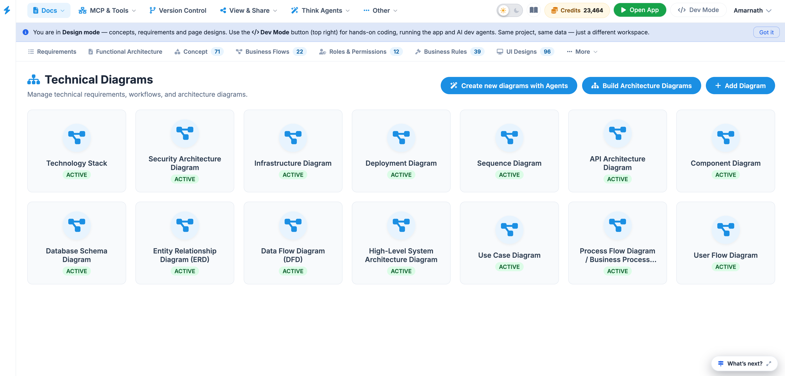
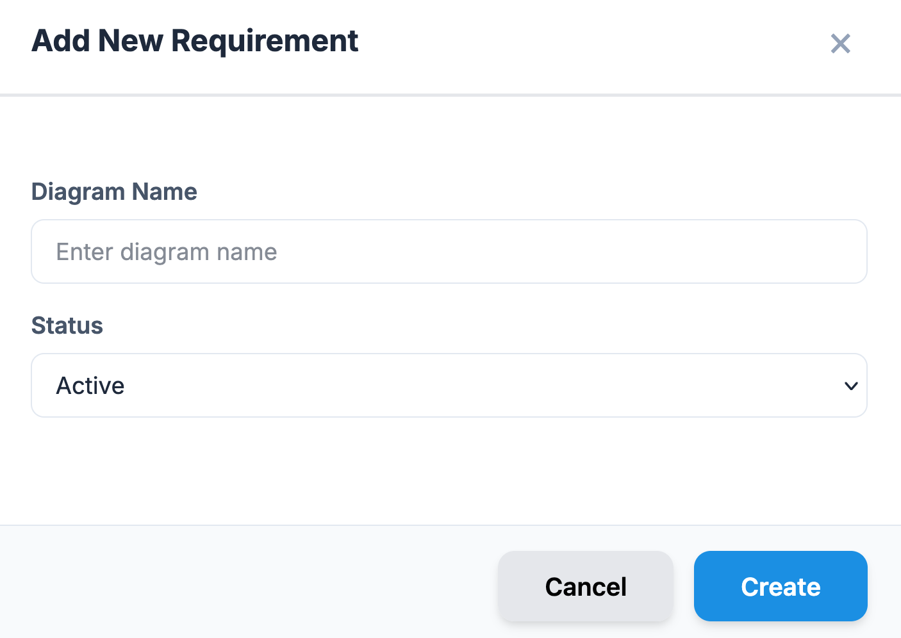
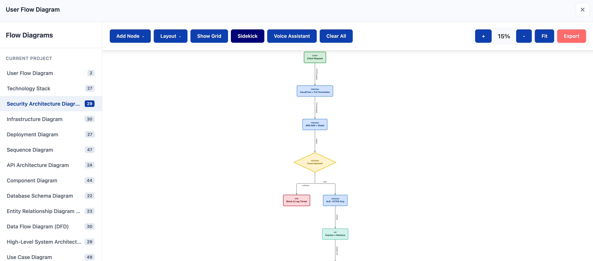

Technical Diagrams
The Technical Diagrams dashboard is a comprehensive visual management suite designed for architects, developers, and system planners. It serves as the central repository for all logic-based and structural visualizations of a project, ensuring that technical requirements and workflows are clearly documented.
The interface displays a grid of Diagram Cards, each representing a specific technical perspective of the system. Each card includes:
- Diagram Type Title: (e.g., Technology Stack, Infrastructure Diagram).
- Status Indicator: An "ACTIVE" badge confirms the diagram is current and validated.
- Standardized Iconography: Uses industry-standard visual markers for quick identification.

Available Diagram Types
The dashboard is divided into several specialized categories to cover the full development lifecycle:
| Category | Specific Diagrams Included |
|---|---|
| System Architecture | Technology Stack, Security Architecture, Infrastructure, Deployment, High-Level System Architecture. |
| Data & Logic | Entity Relationship Diagram (ERD), Database Schema, Data Flow Diagram (DFD). |
| Process & Flow | Sequence Diagram, Process Flow / Business Flow, Use Case Diagram, User Flow Diagram. |
| Structural Design | API Architecture, Component Diagram. |
Key Action Commands
Located at the top-right of the dashboard, these controls allow for active project management:
- Build Architecture Diagrams: Launches the automated builder tool to generate diagrams based on existing system data or code structures.
- Add Diagram: Opens a manual upload or creation interface to introduce a new visualization to the project.
Add Diagram
This button is for manual entry and custom creation.
- How it works: It opens a template gallery or a blank canvas where you can choose a specific diagram type (e.g., Sequence Diagram, ERD, or Flowchart).
- Result: You manually define the logic, shapes, and connections. It can also be used to upload an existing image file (like a png or PDF) from your local drive.
- Best for: Conceptualizing new ideas, documenting specific business rules, or adding external reference diagrams that aren't derived from the project's code.

Build Architecture Diagrams
This button triggers an automated generation process.
- How it works: It uses the platform’s AI or system analysis tools to scan your existing project data, codebases, or infrastructure configurations.
- Result: It automatically creates a "High-Level System Architecture" or "Technology Stack" diagram based on actual project facts.
- Best for: Rapidly documenting complex systems without drawing every line manually, or keeping diagrams in sync with real-time code changes.
Interactive Diagram Viewer
The Interactive Viewer allows you to transition from a high-level overview of your project's architecture to a detailed, editable workspace for any specific technical diagram.
Navigation Workflow
- Select: From the Technical Diagrams dashboard, click on any of the active diagram cards (e.g., Data Flow Diagram [DFD]).
- Open: The system launches a dedicated canvas overlay, centered on that specific data model or workflow.
- Explore: Use the sidebar on the left to quickly jump between different diagram types within the same session without returning to the main dashboard.
Workspace Components
| Area | Description |
|---|---|
| Element Toolbar | Located at the top, this bar provides drag-and-drop components specific to the diagram type, such as Start, Process, Decision, Database, and API nodes. |
| Logic Canvas | The primary area where the workflow is visualized. It supports complex branching, layered layouts, and multi-node connections. |
| Editor Sidebar | Lists all available diagram categories for the current project. Numerical indicators show how many iterations or sub-diagrams exist for each type (e.g., High-Level System Architecture: 42). |
| Action Suite | A specialized set of buttons for canvas management, including Auto Layout, Voice Assistant, Clear All, and zoom controls (100%, Fit). |

Key Features
- Contextual Elements: The toolbar automatically updates based on the diagram type selected, ensuring you use the correct notation (e.g., diamonds for Decisions in a DFD).
- Layout Management: Use the Layered Layout and Direction (Top to Bottom) dropdowns to instantly reorganize complex "spaghetti" diagrams into clean, readable structures.
- Collaboration & Export: Once your diagram is finalized, use the Export button to download the visualization for external documentation or presentations.
Tip: Enable the AI Assistant to make rapid changes to your diagrams using natural language commands, similar to the Modify Page tool.